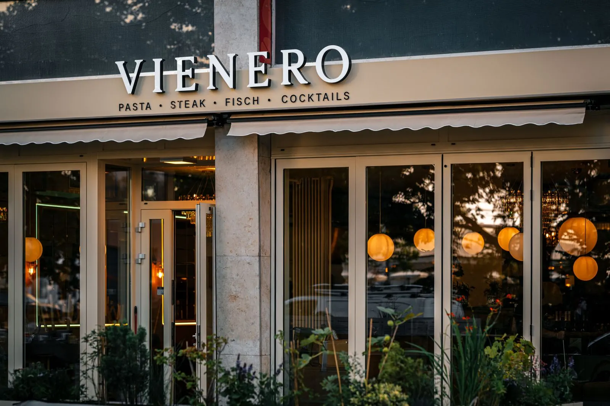
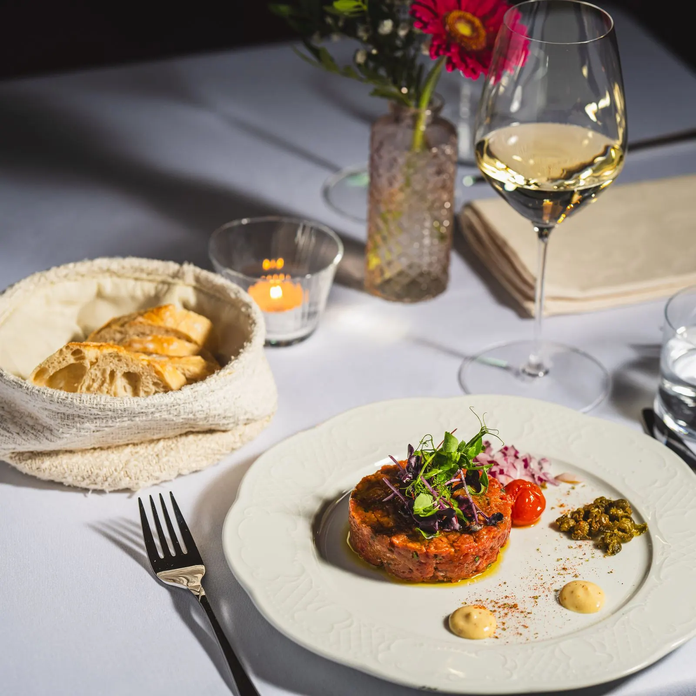
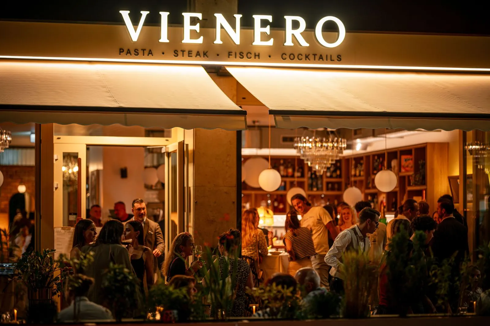

Restaurant à Vienne, à deux pas de Saint-Étienne
Vous cherchez un restaurant au centre de Vienne où l'on mange vraiment bien ? VIENERO est à dix minutes à pied de la cathédrale Saint-Étienne, juste en face du Stadtpark sur le Ring. Ici, la cuisine viennoise rencontre la Méditerranée : le vrai Wiener Schnitzel à la panure légère et dorée, des pâtes à la truffe noire, un bar entier grillé et des cocktails jusqu'à minuit.



Pourquoi VIENERO
- Le Wiener Schnitzel comme il se doit : du veau, une panure légère et dorée, des pommes de terre au persil. Le plat que tout le monde veut goûter à Vienne, sans la file d'attente.
- La Méditerranée dans l'assiette : tartare de bœuf, burrata, pâtes à la truffe, bar grillé et crème brûlée, pour changer après quelques jours de cuisine autrichienne.
- Emplacement idéal : cathédrale Saint-Étienne à dix minutes, Stadtpark devant la porte, métro U3 Stubentor.
- Ouvert tous les jours, le bar jusqu'à minuit : parfait après l'opéra, un concert ou une soirée au Konzerthaus tout proche.
Les fêtes à Vienne
Pendant les marchés de Noël, Vienne est pleine : mieux vaut réserver quelques jours à l'avance. Les soirs du 24 et du 25 décembre sont déjà complets. Pour la Saint-Sylvestre, nous fêtons la nouvelle année avec un menu, un DJ et du champagne à minuit à 169 euros, ouvert jusqu'à 2 h. Le 1er janvier, nous sommes ouverts de 17 h à 23 h.
Réservez votre table
★ 4,4 sur Google · plus de 1 500 avis
Pour le vendredi et le samedi soir, nous conseillons de réserver.
Vous préférez téléphoner ? +43 1 913 70 05 · Groupes à partir de neuf personnes : appelez-nous ou écrivez à Reservierung@vienero.at.
Questions fréquentes
Où se trouve VIENERO ?
Au Dr.-Karl-Lueger-Platz 3, dans le 1er arrondissement de Vienne, juste en face du Stadtpark. La cathédrale Saint-Étienne est à environ dix minutes à pied par la Wollzeile, la station de métro U3 Stubentor est devant la porte.
Quels sont les horaires ?
Tous les jours de midi à minuit, cuisine jusqu'à 22 h. À partir du 1er février 2027, tous les jours de 16 h à minuit, cuisine jusqu'à 23 h. Le bar reste ouvert jusqu'à minuit.
Combien coûte le Wiener Schnitzel ?
Notre Wiener Schnitzel de veau avec pommes de terre au persil coûte 29,90 euros.
Êtes-vous ouverts pour les fêtes ?
Oui, tous les jours. Les soirs du 24 et du 25 décembre sont déjà complets. Pour la Saint-Sylvestre, nous servons un menu avec DJ et champagne à minuit à 169 euros, ouvert jusqu'à 2 h. Le 1er janvier, nous sommes ouverts de 17 h à 23 h.
Faut-il réserver ?
Nous conseillons de réserver pour le vendredi et le samedi soir ainsi que pendant les marchés de Noël. Réservation en ligne, par e-mail ou au +43 1 913 70 05.
Comment venir
Horaires
Tous les jours midi à minuit
Cuisine jusqu'à 22 h
Dès le 1er février 2027 : 16 h à minuit, cuisine jusqu'à 23 h
Adresse
Dr.-Karl-Lueger-Platz 3
1010 Vienne, au Stadtpark
U3 Stubentor
Google Maps